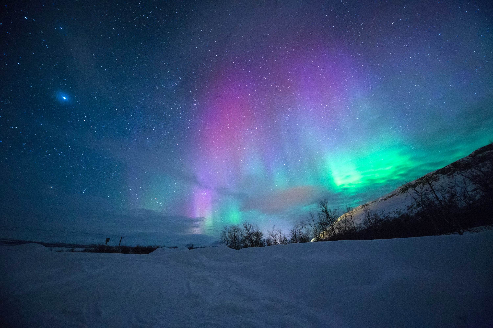

북반 구와 남반구의 고위도 지방 즉 극지방에 가까울수록
관측이 쉽기 때문에 극광이라고도 한다. 즉 북극에서는 북극광 남극에서는 남극광으로 불린다.또 지구이외에 목성, 토성, 화성에도 오로라 현상이 있는 으로 알려졌다. 
announced prior to the news of the Milwaukee mass shooting, but the similarities of the events are many. Both involved a disgruntled empl oyee who brought guns into the workplace and opened fire on employees.